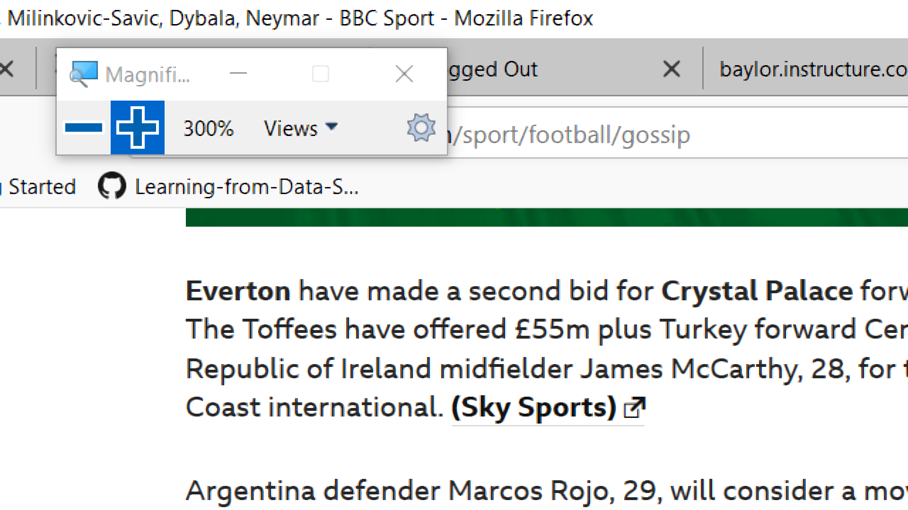
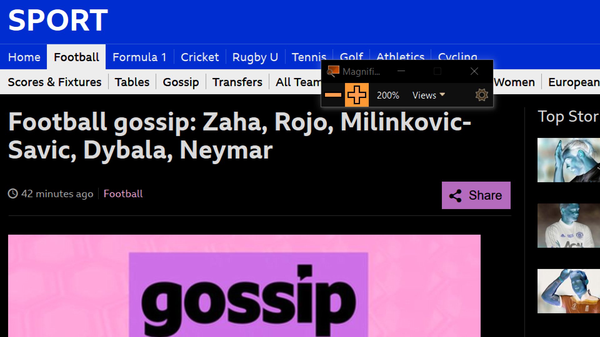

Phone Dialer
Contacts
ABOUT THIS PAGE
Screen Magnifier
Magnifer is preloaded application provide by many operating systems. However, I am current in a windows system. So I will be talking about Windows Magnifer here. A magnifer is a software that basically increases the text of the text, graphics or what content is one the screen. For this task, I used screen magnifer for reading soccer news from BBC.
A magnifer not only provides single mode of operation but various mode like window mode, docked mode. These modes provides some customizatiion options. Another mode for interaction is high contrast mode. The difficulty while reading using magnifer was navigation or scrolling aroud the page. As the text were enlarged, there was constant horizontal and vertical scrolling required which fatigued my eyes. Also, the document was large not fit in the screen, I had use my mouse to read the right most content of the page. The left and right arrow navigation could have helped in smoothing the horizontal scroll. Also, if there was any option like that will limit the horizontal scroll will be a good help. The high contrast mode was working as it was suppose to. The colors were inverted and every icon and buttons changed. However, some image color did not invert.
Magnified to 300%
Inverted Colors and Magnified to 200%

Link to Orginal Image for Magnifer in Google Drive
List of Changes
- Added two buttons: Increase and Decrease Font
- Added a button to switch mode: Normal and High Contrast using single css and jquery
- Added icons in button likes : Call, Contacts
- Added tab About this page
- Seperated Contacts using two different labels: friends and company
- Switching modes also inverts the color of the image